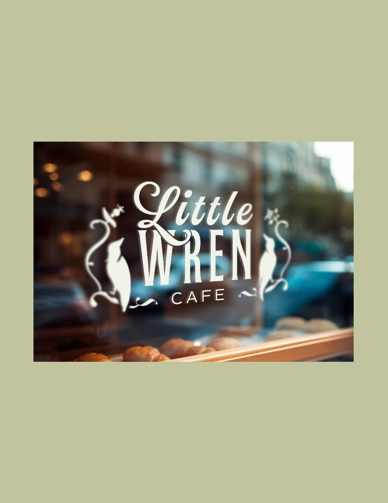
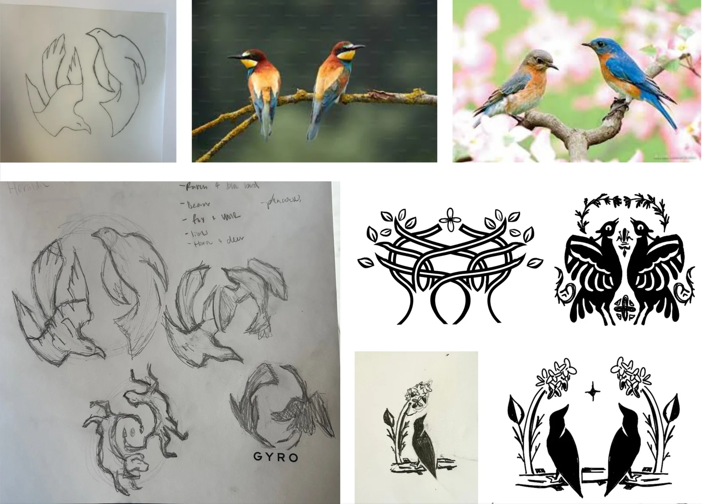
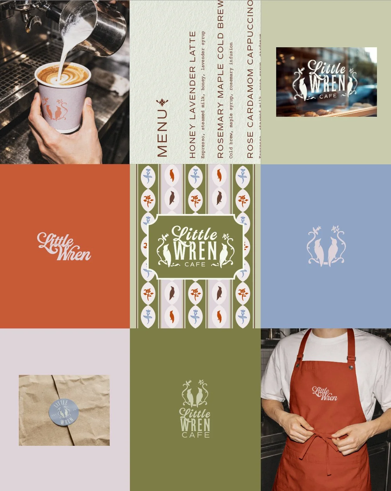
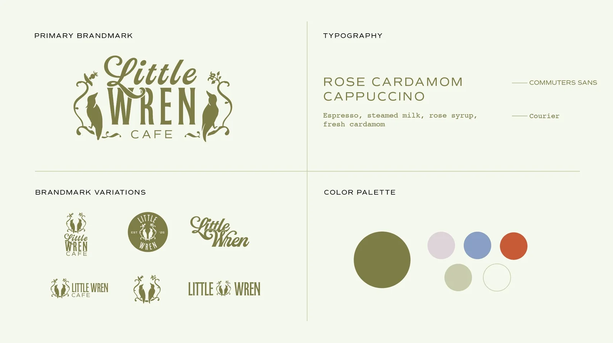

A brand identity for a whimsical coffee shop inspired by nature, contrast, and the quiet rituals of birdwatching.

Little Wren Cafe — a brand built on warmth, contrast, and small moments of discovery.
Little Wren Cafe is a whimsical coffee shop inspired by nature and the quiet rituals of birdwatching. The challenge was to create a brand that felt both playful and grounded, something that stood out while staying calm and approachable.
The identity needed to hold two contrasting personalities at once, and translate themes of birdwatching and the outdoors without tipping into the literal or the cliché.
I built the brand around a narrative of connection and contrast, using birdwatching as both inspiration and metaphor. Two birds became the heart of the system, working as symbol and story at once, representing the relationship behind the brand. Drawing from field guides, natural textures, and café culture kept the identity grounded without leaning on cliché.
Used contrast as a core system — soft vs. structured, warm vs. cool, playful vs. refined.
Developed two birds as both symbol and narrative device, representing the relationship behind the brand.
Drew from field guides, natural textures, and café culture to ground the identity without cliché.
Balanced whimsical illustration with structured layouts to appeal to a broad audience.


The resulting system combines a warm, earthy palette, custom illustrations, and flexible design elements that translate across every touchpoint, from menus to packaging to in-store materials. It's cohesive and scalable, with a distinct visual identity that balances charm with sophistication.
I approached this as both strategist and designer, building the concept, visual language, and applications from the ground up. The project let me explore how contrast can work not as tension, but as harmony, shaping a brand that feels dynamic, thoughtful, and full of small moments of discovery.
